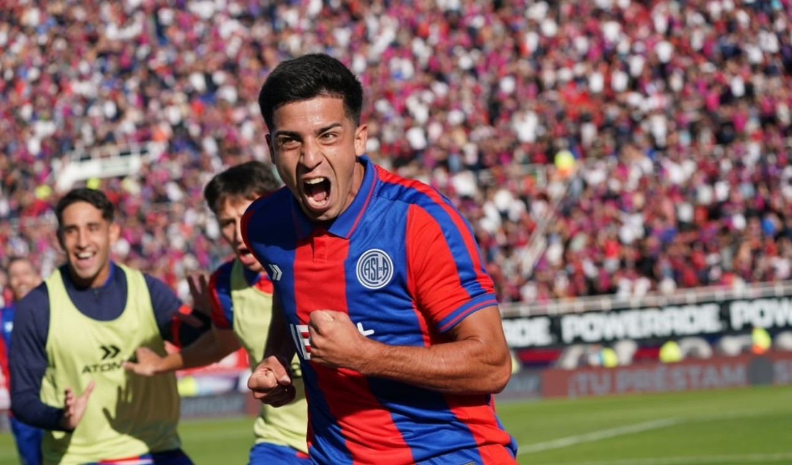
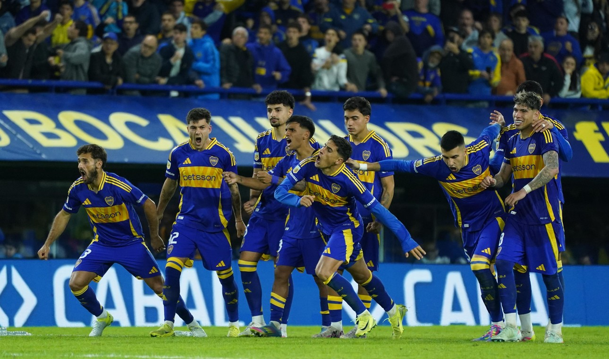
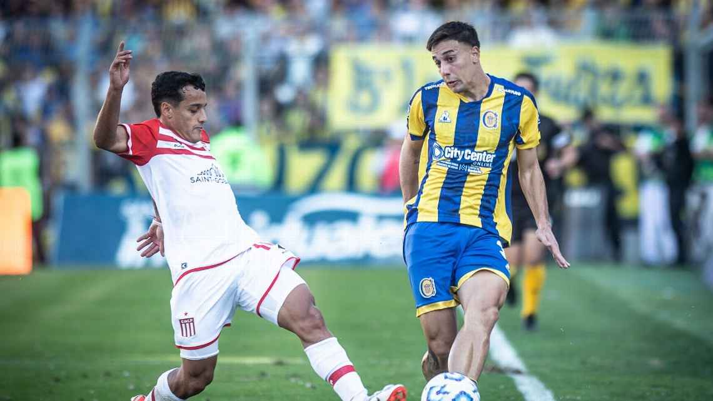

Bienvenidos a Gol Argentino
Gol Argentino es mucho más que un portal de noticias. Es un espacio hecho por y para amantes del fútbol nacional. Aquí vas a encontrar no solo la última información, sino también una mirada crítica, analítica y apasionada sobre lo que ocurre dentro y fuera de la cancha.
Desde la Liga Profesional de Fútbol hasta las categorías del ascenso y el fútbol regional, nos proponemos ofrecerte una cobertura completa, federal y sin filtro. Exploramos la historia de los clubes, la evolución táctica de los equipos, la voz de los protagonistas y el pulso de la tribuna.
Nuestra misión es crear una comunidad que valore el análisis serio, la pluralidad de miradas y el amor genuino por este deporte. Porque el fútbol argentino no solo se juega, también se piensa y se siente.
Noticias destacadas
San Lorenzo venció a Tigre por la Copa de la liga y se asoma a los cuartos de final
En una tarde intensa en el Nuevo Gasómetro, el equipo de Miguel Ángel Russo se impuso 2-0 con goles de Vombergar y Cuello. Más allá del resultado, lo destacado fue el dominio táctico que ejerció San Lorenzo desde el mediocampo, cerrando los circuitos de Tigre y aprovechando cada error en la salida rival.
- El mapa de calor de los jugadores clave
- Declaraciones de Russo: “Todavía no logramos nada, pero vamos bien"
- Ubeda: "Vamos a fortarlezernos y a sacar lo mejor para el siguiente certamen"
- El panorama del grupo y lo que necesita el Ciclón para clasificar

Boca ganó por penales contra Lanus
Tras un empate sin goles en La Bombonera, el Xeneize se impuso desde los 12 pasos con gran actuación de Marchesín, que se consagró atajando uno de los penales y siendo figura silenciosa durante el partido.
El rendimiento de los juveniles en un contexto de presión
Por qué Gago apostó por el doble cinco
El análisis táctico de un partido cerrado, y cómo Boca buscó variantes sin éxito

Estudiantes no se pudo llevar la victoria ante el Canalla
Lo que parecía un partido trabado terminó siendo un recital de Rosario Central, que se llevó el partido con autoridad por 2-0. El equipo rosarino, con presión alta y circulación rápida, desnudó falencias defensivas en el planteo de Domínguez.
Cómo Rosario Central bloqueó los avances de Estudiantes usando una doble línea de cuatro con rotación de extremos.
Qué errores de planteo repite el equipo de Domínguez en los partidos de visitante.
Por qué Central está encontrando solidez pese a un plantel corto.

Contenido exclusivo
- Podcast semanal: Con la voz de periodistas, técnicos y exjugadores.
- Sección de análisis: Táctica, estadísticas y curiosidades del fútbol nacional.
- Galerías fotográficas: Los momentos más icónicos del fin de semana.
- Crónicas en vivo: Cobertura minuto a minuto de partidos clave.
Explorá nuestras secciones
Desde los orígenes del fútbol criollo hasta los triunfos internacionales que marcaron época.
Todo sobre la Liga Profesional, Copa Argentina, ascenso y más. Calendario, tabla y formato.
Fotos, videos y podcast para revivir lo mejor del fútbol argentino cada semana.
Informe táctico de los principales equipos, jugadores revelación y tendencias de juego.